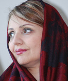

پذيرش > سایت نوشته ها > چهره ما، تاریخ ما
 گفت و گو با فریبا داوودی مهاجر گفت و گو با فریبا داوودی مهاجر

 چهره ما، تاریخ ما چهره ما، تاریخ ما
21 آذر 1387 - شبکه بین المللی همبستگی با مبارزات زنان ایران - نسخه قابل چاپ
فریبا جان لطفا کمی از خودتان برایمان بگوئید
فریبا داودی : خود من همان کسی است که در فعالیت هایش تعریف می شود، در نوشته ها و تفکرش نسبت به محیط اطراف و مسئولیت فردی اش نسبت به این محیط. من چیزی به جز آنچه می بینید نیستم.
من همیشه برای زندگی و عشق تلاش کرده ام و این من، با زندگی و عشق به آزادی و برابری معنا پیدا می کند و اساسا فکر می کنم ما نمی توانیم به آزادی دست پیدا کنیم اگر به یکدیگر عشق نورزیم و صمیمانه همدیگر را دوست نداشته باشیم و یا در یک نگاه حداقلی به یکدیگر احترام نگذاریم.
هر کاری انجام داده ام درست یا غلط با نوعی عاشقی همراه بوده است. عصیانی برای پاره کردن پیله ها و تارو پودهای اطراف، شکستن خطوط ترسیم شده و لذت از عبور. برای عبور، دیوانه بار هزینه داده ام و دو بار در زندگی پریده ام و بار دوم این کار را با وجود طوفان انجام دادم. این که حجاب داشته باشی و مذهبی باشی و یک باره همه را زمین بگذاری و بی اهمبت به حرف دیگران یا قضاوتی که در باره تو می کنند به راهت ادامه دهی سخت است. خیلی سخت. این که خانواده ات چه قضاوتی می کنند و یا دوستانت ویا حتی فرزندانت.
سخت است توضیح دهی که از هر چه اجبار است بیزاری. با باید و نباید کنار نمی آیی و می خواهی خودت باشی. همان دختر کوچولویی که آزاد و رها تا مدرسه میدوید. سر خوش بود واز همان کودکی دوست نداشت که مادرش حتی او را دکتر ببرد و فکر میکرد از همه دنیا توانا تر است. سخت است که توضیح بدهی اگر مذهبی شدی آنهم در یک خانواده غیر مذهبی تنها به خاطر این بود که فکر میکردی دین میتواند ظلم را از میان بردارد و وقتی دین را بر زمین نهادی برای این است که دیدی دین به ابزار قدرت و ابزار سلطه تبدیل شده است. به ابزاری برای به دست گرفتن قدرت و ثروت و تو دیگر نمی خواهی حتی شاهدی بر این تاراج باشی. سال ها بود که می گفتم این همه ظلم به نام اسلام است و ربطی به دین ندارد. قوانین دینی قابل اصلاح است که شاید هم اینگونه باشد. ولی من دیگر نمی خواستم توجیه گر قوانینی باشم که نا عادلانه بود و باید سالها متنظر می ماندم تا مجتهدی دلش برای این نسل سوخته بسوزد و آن را اگر دلش خواست تغییر بدهد یا ندهد. به دین داران احترام می گذاشتم و خواهم گذاشت اما به هیچوجه اعتقاد نداشتم که باید به نام دین حکومت کرد. حکومت دینی ابتدا دین را از میان می برد و سپس مردمی را که با این نام از آن تبعیت می کنند.
من از همان ابتدا مذهبی نشده بودم که خدا نگهبان من باشد. چه رسد به امروز که عده ای فرصت طلب می خواستتند به نام دین قیم من باشند و تصور می کردند دنیا و آخرت من و مردم در دستان آنها قرار دارد. من نمی خواستم که پشت یک پرده ای که به ظاهر ابریشم است مزه حقارت را حس کنم و تمام تلاشم را کردم که نه تنها از پشت این پرده به سمت آفتاب بخیزم بلکه بگویم که پرده به ظاهر زیبا ،نخ نما شده است. نخ نما شده چون نمی تواند حس برابری و طعم عدالت را به من بچشاند. من ابتدا بر علیه خودم قیام کردم و بعد ستون های که این پارچه بر آنها افتاده است و حتی خاکی که این ستون ها بر آن بنا شده است. نمی خواستم که شاخ و برگ را سم پاشی کنم. می خواستم خاک این باغچه پر از کرم را عوض کنم. و البته که در معرض قضاوت قرار داشتم.
قضاوتی که همواره از آن فراری بوده ام و فکر می کنم مشکل تاریخی ملت ما در قضاوت دائمی نسبت به یکدیگر، محترم نشمردن حریم شخصی است. ولی به هر حال در معرض این تفکر قرار داشتم. شاید بعضی ها می گفتتد فریبا دچار هالیناسیون شده است .اما من خودم می دانستم که فریبا همان فریبا است حتی واقعی تر آنگونه که خودش دوست دارد و نه آنطور که جامعه، یا دوستان یا همسرش می پسندد. من می خواستم دیگران خود واقعی من را دوست داشته باشند. به همان اندازه سر خوشی و سبکبالی واین میدان تازه ای بود برای آنکه بدانم اطرافیانم من را دوست دارند یا خودشان را. من اگر امروز مادر سه فرزند هستم و چهل و سه سال زندگی کرده ام و یا اندکی درس خوانده ام. اگر روزنامه نگارم و یا در سازمان های غیردولتی فعالیت می کنم همه و همه برای رسیدن به این ارزش ها بوده است. به مادرم و بچه هایم بیش از هر موجود زمینی عشق می ورزیده ام و این چهار نفر برای من انگیزه نفس کشیدن هستند. راستش به چون و چرا بسیار علاقه مندم و همواره محیط اطرافم را نقد می کنم و هر عاملی که بخواهد دست و پای نقد را در من ببندد کنار می زنم.
چگونه به فعّالیتهای اجتماعی و سیاسی علاقمند شدید و شرایط پیرامونی شما چه تأثیری در این مورد داشته اند
فریبا داودی:علاقه به این مسائل با انسان متولد می شود. از همان بچگی نسبت به آنچه در پیرامونم می گذشت حساس بودم. قبل از دبستان همواره موقع خواب فکر می کردم که بعد از مرگ چه می شویم. یا چرا بعضی انسان ها فقیرند بعضی ثروتمند. علاقه مند بودم کارهایی را انجام بدهم که پسر ها انجام می دهند و نمی توانستم به دلیل دختر بودن از بعضی بازی ها مثل فوتبال کنار گذاشته شوم. مدرسه مختلط می رفتم و از پسرها می خواستم مرا داخل تیم بگذارند. همان قبل از دبستان به کتابخانه پارک فرح می رفتم و در کانون پرورش فکری با نوجوانانی آشنا شدم که کلاس روزنامه نگاری و تاتر داشتند و یک روزهایی با هم کتاب می خواندند و دسته جمعی به کوره پزخانه و حلبی آبادها می رفتند. آن ها تاثیر زیادی روی من داشتند و برایم کتاب ماهی سیاه کوچولو و قصه های صمد بهرنگی می خواندند. مرتب از مردم فقیر حرف می زدند. من کودک بودم و خیلی حرف های آنها را نمی فهمیدم و آنها همیشه به من می گفتند بزرگتر که شدی برایت توضیح می دهیم. دوازده یا سیزده ساله بودم که انقلاب شد و این آشنایی با محرومیت و آرزوی ایرانی که هیچ فقیری نداشته باشد در من نوجوان شکل گرفت. به محیط اطرافم حساس بودم و مصلحت سنجی نمی کردم
چگونه به مسائل حوزه زنان علاقمند شدید و از چه زمانی شروع به فعّالیت در امور زنان کرده اید؟
فریبا داودی: بیشتر از درونم می جوشید. هیچگاه به روزمرگی عادت نکردم. کمتر در خانه بند می شدم. وقتی فکر می کردم کاری درست نیست سعی می کردم آن را تغییر دهم. از خانه تا مدرسه تا اجتماع. در دوره راهنمایی سعی می کردم بچه ها را جمع کنم و فعالیت جمعی داشته باشیم، و از همان زمان با موانع کنار نمی آمدم. به هر حال شما بخوبی می دانید که در یک جامعه مردسالار یک زن برای اینکه بتواند به فعالیت اجتماعی و سیاسی ادامه بدهد باید از سقف های شیشه ای خانواده و اجتماع عبور کند. هر چه با موانع اطراف زنان بیشتر آشنا می شدم میل به تغییر در من بیشتر میشد. هر چه در معرض تحقیر قرار می گرفتم و مزه انواع و اقسام خشونت را می چشیدم به جای آنکه سر تعظیم فرود بیاورم بیشتر اعتراض میکردم.
درمورد من، محدودیت ها باعث شد بیشتر تلاش کنم و هرگز به آنها تن ندهم. از محدودیت به شناخت محیط اطرافم می رسیدم و خطوط قرمز تعریف شده را میشکستم . هر چه محیط بیشتر بسته می شد من کنده تر می شدم و به نقش های کلیشه ای زنانه تن نمی دادم.
دوازده یا سیزده سالم بود که انقلاب شد و از همان موقع مسائل سیاسی را پیگیری می کردم. عاشق سیاست بودم و از آن لذت می بردم. در اتمام شانزده سالگی و در دبیرستان ازدواج کردم. آخرین واحد لیسانس را که امتحان دادم بچه سومم یازده ماه بود. جدی ترین و آموزنده ترین دوره زندگی من همین دوران بود. من در یک دوره آماده سازی عملی قرار داشتم. درس بخوانم و بچه داری کنم. و در عین حال به روزمرگی نیافتم. و با سه بچه فوق لیسانس علوم سیاسی قبول شدم. وارد فعالیت روزنامه نگاری شدم و بعدها در روزنامه هایی که همگی توقیف شدند کار کردم. همزمان به سخنرانی در دانشگاهها و مجامع عمومی می رفتم. نسبت به حصر آیت الله منتظری که خط قرمز نظام بود و یا نبود آزادی های عمومی و بعدها قتل های زنجیره ای معترض بودم. از همان زمان نقدهایی نسبت به عملکرد جناح اصلاح طلب و تاکتیک آرامش فعال داشتم و نمی فهمیدم با حکومتی که همه ابزارهای قدرت را در دست دارد با یک نهاد رهبری غیرقابل تغییر و فرمان حکومتی چگونه می توان آرامش فعال را تبیین کرد.
معتقد بودم که اصلاحات از دورن قدرت به بن بست می رسد. چرا که حاکمیت حاضر به واگذاری قدرت و چند صدایی نیست و همه را یکسره برای خود می خواهد. اصلاحات دوپایه داشت. یکی میان مردم و یکی در میان قدرت و دست آخر قدرت را برگزید و حاضر نشد در کنار مردم قرار بگیرد و من اعتقاد داشتم و دارم که قدرت واقعی در عر صه عمومی است و به همین دلیل نه تنها به سمت این عرصه رفتم بلکه همواره نقد جدی به افراد و گروه هایی را داشتم که با دادن آدرس عوضی ملت را به بیراهه بردند. آنها به اندازه گروههایی که جاده را مسدود کرده بودند مقصر بودند. به اضافه انکه امید و اعتماد را از مردم نیز باز ستاندند. امید و اعتمادی که می تواند پایه هر جنبش اجتماعی باشد
شما یکی ازکسانی بوده اید که به همراه دیگر زنان فعال حرکت کمپین یک میلیون امضا را شروع کرده اید، چگونه به این راه کار دست یافتید؟
فریبا داودی: اولین امر و نهی با دلیل یا بدون دلیل برای زنی که خودش را دارای هویتی برابر با مرد می داند می تواند نقطه شروع حرکت باشد و البته فرد در طول حرکت رشد می کند و بالغ می شود. اولین باید و نباید ،اولین کلیشه، اولین تعریف از نقش هایی که او دوست ندارد می تواند در ذهن یک زن سوال ایجاد کند که چرا. من همیشه سعی می کردم ابزارهای سرکوب در عرصه عمومی و خصوصی را تجزیه و تحلیل کنم و ببینم چگونه یک جنس و با چه روشهایی جنس دیگر را حذف می کند و بر او مسلط می شود. در زندگی خودم، اطرافیانم و دوستانم دقت می کردم و می دیدم که چگونه با تنبیه یا تشویق اطاعت زنان خریداری میشود ومستقیم و غیر مستقیم زیر دست میشوند . آرام آرام می دیدم که چگونه از حجاب به عنوان سرکوب استفاده می شود و با پیچیدن او در حجاب او را از فعالیت های سیاسی و اجتماعی و اقتصادی حذف می کنند. اوایل سعی می کردم بگویم نه. زنان حتی با حجاب هم می توانند پیشرفت کنند اما دیدم حجاب اولین ابزاری است که می گویند تو زن هستی و تو مرد هستی. چه رفتاری برای زن خوب است چه رفتاری بد است. چه رفتاری سبک است و چه رفتاری سنگین است. زن ها یک طرف بنشینند. مرد ها یک طرف. همه چیز خلاصه می شد در محرم و نا محرم . تا مرد می دیدی، یکی از این ها بود. در حالی که من می خواستم یک انسان باشم با نگاههایی انسانی نه نگاه هایی صرفا جنسی. خسته شده بودم از بس مواظب خودم بودم که همه در باره من درست قضاوت کنند. در حالی که من و همه زنان رفتارهایی معمولی داشتیم ولی باید مرتب خودمان را با معیار های مردانه می سنجیدیم.
یک روز در منزل یکی از دوستان اپوزسیون داخل ایران جلسه ای بود در باره اسلام و زن. من در آن جلسه حتی نتوانستم سوال کنم چون زنان در یک اتاق بودند ومردان دریک سالن دیگر. مجبور شدم اتاق را ترک کنم و به یکی از آقایان بگویم که سوال من را بپرسد. همه این ها و صد ها مورد دیگر موجب شد دلم را به دریا بزنم. سال ها بود به دریا زده بودم ولی دریایی نشده بودم. شنا میکردم اما شجاعت شنا در طوفان را نداشتم بعد فکر کردم نمی شود حرفهای روشنفکری زد اما هزینه اش را نپذیرفت. فعال حقوق بشر بود اما در راه حقوق بشر فدا نشد. با یک ساختار سلطه گرا در افتاد و زندگی و راحتی را حفظ کرد. فکر کردم گام اول را باید از خودم شروع کنم و هر چه تا به حال انجام داده ام عبث و شعار گونه بوده است.
به هر حال هر چه امروز هستم در اثر تجربیاتم است. حاصل تجربه سی سال گذشته بعد از انقلاب است و آنچه که در عرصه های مختلف و در روابط قدرت دیدم. تجربه هایی که اراده و مقاومت من را افزایش داد و مسیر حرکت را نشان داد. این تجربه به من آموخت که یک زن هرگز نباید به خاطر مادر یا همسر بودن و یا هر وظیفه دیگری تحقیر بشود، جنس دوم باشد و چنانچه مناسبات در جامعه ای حافظ این سلسله مراتب و نگاه توام به سلطه است باید آن را ریشه یابی و بررسی کرد و سپس درباره آن به جامعه آگاهی داد و حساس سازی کرد و سپس به مبارزه با آن پرداخت. این مبارزه بسیار دشوار است. دشوار تر از مبارزه سیاسی. چون همه نهادهای معطوف باید رو به چشم انداز و برنامه عمل های کوتاه مدت و بلند مدت همراه با صبر و تحمل باشد. خستگی ناپذیری جزء این حرکت است. هرگز نباید ناامید شد. هرچه که بر سر راه فعالان موانع بیشمار بگذارند نباید ناامید شویم و به سمت جلو حرکت کنیم برای زندگی و عشق و آزادی و عدالت. برای آینده دختران و پسرانمان و برای خودمان. تجربه به من آموخت که تحمل ما برای آنها بسیار سخت است. حتی برای مردانی که ادعای دمکراسی و اصلاح طلبی دارند نیز بسیار دشوار است.
ولی خوب مهمترین انگیزه از زندان شروع شد زمانی که در زندان بودم از زن بودن من برای برخورد با من استفاده می کردند. از آنجا احساس کردم که هر چه فعالیت کنم و تظاهر کنم که با مردان برابر هستم اما مردان از زنان استفاده می کنند و باید از درون جامعه با جامعه صحبت کرد. بایداز میان مردم با مردم گفت و گو کرد. بعدها که کاندیدای مجلس شدم باز این موضوع را بیشتر احساس کردم. در فعالیت تبلیغاتی متوجه شدم که زنان با چه مناسباتی حذف می شوند و باز این مردان هستند که زن ها را انتخاب می کنند. سهمیه می دهند و زنها چاره ای جز پذیرش ندارند. نپذیرند چکار کنند؟ بخصوص که جرأت ندارند از احزاب مردانه خارج شوند. نمی توانند خود را بدون چتر و حمایت مردان تعریف کنند. و همه این تجربیات چراغ راه آینده شد.
چه پیشنهاداتی برای پیشبرد مبارزات و اهداف فمینیستی زنان ایرانی دارید؟
فریبا داودی: من فکر می کنم اول و آخر همه حرفها می تواند همبستگی در جهت اهداف مشترک باشد. باید پشت به پشت هم ایستاد و اجازه نداد که نهادهای موازی اطلاعاتی با سیاست نفوذ و انهدام، صفوف جنبش های اجتماعی را از هم باز کنند. می توان در NGO های مختلف فعالیت کرد. روش های گوناگون داشت اما هدف مشترک را فراموش نکرد. باید اختلاف ها را کنار بگذاریم و با هم کار کنیم. نکته بعد که بسیار پراهمیت است ارتباط همه فعالان با نهادهای حقوق بشر بین المللی است. از افراد تا سازمان هایی که دراین رابطه فعالیت می کنند. فکر می کنم با همه فشارهایی که جمهوری اسلامی روی فعالان می گذارد نباید ارتباطهای بین المللی را فراموش کرد و همواره در صدر فعالیت ها باید به آن توجه نمود.
فکر می کنم با همه محدودیت ها نباید از رسانه ها غافل شد و اطلاع رسانی را از مهمترین ابزار حرکت تلقی کرد .
فریبا جان بسیار سپاسگزارم که ساعاتی از وقت ارزشمند ت را صرف این مصاحبه کردی
شبکه بین المللی همبستگی با مبارزات زنان ایران
ارسال به
بالاترین
،
توییتر
،
فریندفید
،
فیسبوک
در همين بخش :
 یک خبر تلخ؟ یک قانونشکنی؟ یک تصمیم بخشنامهای جدید؟ یک خبر تلخ؟ یک قانونشکنی؟ یک تصمیم بخشنامهای جدید؟
چرا بایست به سکسوالیته پرداخت؟ / نفیسه آزاد
آزارجنسی خانگی؛ «قربانی» نه، «نجات یافته»
زنان، بزرگترین بازندگان بهار عرب
سانسور از دیدگاه جنسیتی/الهه امانی
ديگر بخش ها :
طرح یک میلیون امضا
|
مقالات
|
سایت نوشته ها
|
اخبار
|
گزارش كمپين
|
گفت و گو
|
علیه سکوت
|
كوچه به كوچه
|
نامه های شما
|
گزارش ویژه
|
گفتگو با اعضا
|
ویژه سالگرد کمپین
|
تصویر برابری
|
دل آرام علی
|
تریبون
|
مقالات
|
تاریخ شفاهی
|
خارج از چارچوب
|
کتابخانه
|
درباره کمپین
|
کمپین در شهرها
|
کمپین در بند
|
صدای تغییر
|
ویژه 22 خرداد
|
لایحه حمایت از خانواده
|
گالری
|
عشا مومنی
|
امیر یعقوبعلی
|
خدیجه مقدم
|
راحله عسگری زاده و نسیم خسروی
|
پروین اردلان،جلوه جواهری، مریم حسین خواه، ناهید کشاورز
|
زینب پیغمبرزاده
|
سعیده امین، سارا ایمانیان، محبوبه حسین زاده، ناهید کشاورز و همایون نامی
|
احترام شادفر
|
نسیم سرابندی زاده،فاطمه دهدشتی
|
وبلاگ مهمان
|
پرونده خرم آباد
|
دستگیری ها
|
مریم مالک
|
پرستو اللهیاری
|
مهرنوش اعتمادی
|
سمیه رشیدی
|
Other Languages
|
همراهان
|
«فراخوان کمپین ده روز با بهاره هدایت»
| English
|